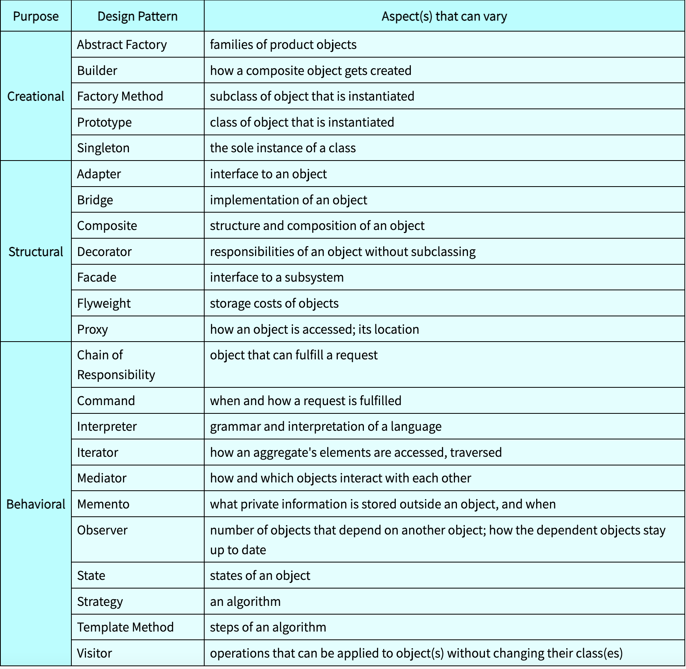

Design Pattern - Python
Contents
Design Pattern - Python¶

Creational Pattern¶
Abstract Factory¶

Class Diagram:

from abc import ABC, abstractmethod
class AbstractProductA(ABC):
@abstractmethod
def functionA(self) -> str:
pass
class AbstractProductB(ABC):
@abstractmethod
def functionB(self) -> None:
pass
@abstractmethod
def functionCollaborationA(self, collaborator: AbstractProductA) -> None:
pass
class AbstractFactory(ABC):
@abstractmethod
def createProductA(self) -> AbstractProductA:
pass
@abstractmethod
def createProductB(self) -> AbstractProductB:
pass
class ConcreteProductA1(AbstractProductA):
def functionA(self) -> str:
return "This is concrete product A1"
class ConcreteProductA2(AbstractProductA):
def functionA(self) -> str:
return "This is concrete product A2"
class ConcreteProductB1(AbstractProductB):
def functionB(self) -> str:
return "This is concrete product B1"
def functionCollaborationA(self, collaborator: AbstractProductA) -> str:
result = collaborator.functionA()
return f"This is concrete product B1 collaborating with ({result})"
class ConcreteProductB2(AbstractProductB):
def functionB(self) -> str:
return "This is concrete product B2"
def functionCollaborationA(self, collaborator: AbstractProductA) -> str:
result = collaborator.functionA()
return f"This is concrete product B2 collaborating with ({result})"
class ConcreteFactory1(AbstractFactory):
def createProductA(self) -> AbstractProductA:
print('Test ConcreteFactory1->createProductA')
return ConcreteProductA1()
def createProductB(self) -> AbstractProductB:
return ConcreteProductB1()
class ConcreteFactory2(AbstractFactory):
def createProductA(self) -> AbstractProductA:
return ConcreteProductA2()
def createProductB(self) -> AbstractProductB:
return ConcreteProductB2()
def testAbstractFactoryCode(factory: AbstractFactory) -> None:
productA = factory.createProductA()
productB = factory.createProductB()
print(type(factory))
print(type(productA))
print(type(productB))
print(f"{productB.functionB()}")
print(f"{productB.functionCollaborationA(productA)}")
print("Testing Abstract Factory 1")
testAbstractFactoryCode(ConcreteFactory1())
print("Testing Abstract Factory 2")
testAbstractFactoryCode(ConcreteFactory2())
Testing Abstract Factory 1
Test ConcreteFactory1->createProductA
<class '__main__.ConcreteFactory1'>
<class '__main__.ConcreteProductA1'>
<class '__main__.ConcreteProductB1'>
This is concrete product B1
This is concrete product B1 collaborating with (This is concrete product A1)
Testing Abstract Factory 2
<class '__main__.ConcreteFactory2'>
<class '__main__.ConcreteProductA2'>
<class '__main__.ConcreteProductB2'>
This is concrete product B2
This is concrete product B2 collaborating with (This is concrete product A2)
Builder¶

Class Diagram:

from abc import ABC, abstractmethod
from typing import Any
class Builder(ABC):
@property
@abstractmethod
def product(self) -> None:
pass
@abstractmethod
def partA(self):
pass
@abstractmethod
def partB(self):
pass
class Product1():
def __init__(self) -> None:
self.parts = []
def add(self, part: Any) -> None:
self.parts.append(part)
def listParts(self) -> None:
print(f"Product Parts: {', '.join(self.parts)}")
class ConcreteBuilder1(Builder):
def __init__(self) -> None:
self.reset()
def reset(self) -> None:
self._product = Product1()
@property
def product(self) -> Product1:
product = self._product
self.reset()
return product
def partA(self) -> None:
self._product.add("PartA1")
def partB(self) -> None:
self._product.add("PartB1")
class Director:
def __init__(self) -> None:
self._builder = None
@property
def builder(self) -> Builder:
return self._builder
@builder.setter
def builder(self, builder: Builder) -> None:
self._builder = builder
def buildMinimalProduct(self) -> None:
self.builder.partA()
def buildFullProduct(self) -> None:
self.builder.partA()
self.builder.partB()
director = Director()
builder = ConcreteBuilder1()
director.builder = builder
print("Minimal Product")
director.buildMinimalProduct()
builder.product.listParts()
print("\nFull Product")
director.buildFullProduct()
builder.product.listParts()
print("\nCustom Product")
builder.partA()
builder.partB()
builder.product.listParts()
Minimal Product
Product Parts: PartA1
Full Product
Product Parts: PartA1, PartB1
Custom Product
Product Parts: PartA1, PartB1
Factory Method¶

Class Diagram

from abc import ABC, abstractmethod
class Product(ABC):
@abstractmethod
def operation(self) -> str:
pass
class Creator(ABC):
@abstractmethod
def factoryMethod(self):
pass
def otherStuff(self) -> str:
product = self.factoryMethod()
result = f"Creator: Creator code {product.operation()}"
return result
class ConcreteProduct1(Product):
def operation(self) -> str:
return "Result of ConcreteProduct1"
class ConcreteProduct2(Product):
def operation(self) -> str:
return "Result of ConcreteProduct2"
class ConcreteCreator1(Creator):
def factoryMethod(self) -> Product:
return ConcreteProduct1()
class ConcreteCreator2(Creator):
def factoryMethod(self) -> Product:
return ConcreteProduct2()
def testFactoryMethod(creator: Creator) -> None:
print(f"Client: testFactoryMethod() \n{creator.otherStuff()}")
print("Main: ConcreteCreator1")
testFactoryMethod(ConcreteCreator1())
print("\nMain: ConcreteCreator2")
testFactoryMethod(ConcreteCreator2())
Main: ConcreteCreator1
Client: testFactoryMethod()
Creator: Creator code Result of ConcreteProduct1
Main: ConcreteCreator2
Client: testFactoryMethod()
Creator: Creator code Result of ConcreteProduct2
Prototype¶
the prototype pattern facilitates producing exact copies of geometric objects, without coupling the code to their classes
Class Diagram:

import copy
class SelfReferencingEntity:
def __init__(self):
self.parent = None
def setParent(self, parent):
self.parent = parent
class Component:
def __init__(self, intObj, listObj, refObj):
self.intObj = intObj
self.listObj = listObj
self.refObj = refObj
def __copy__(self):
copyListObj = copy.copy(self.listObj)
copyRefObj = copy.copy(self.refObj)
new = self.__class__(self.intObj, copyListObj, copyRefObj)
new.__dict__.update(new.__dict__)
return new
def __deepcopy__(self, memo=None):
if memo is None:
memo = {}
copyListObj = copy.deepcopy(self.listObj, memo)
copyRefObj = copy.deepcopy(self.refObj, memo)
new = self.__class__(self.intObj, copyListObj, copyRefObj)
new.__dict__ = copy.deepcopy(self.__dict__, memo)
return new
listObj = [1, {'a', 'b'}, [1,2,4]]
refObj = SelfReferencingEntity()
comp = Component(12, listObj, refObj)
refObj.setParent(comp)
shallowComponent = copy.copy(comp)
deepComponent = copy.deepcopy(comp)
shallowComponent.listObj.append('c')
comp.listObj.append('d')
deepComponent.listObj.append('e')
comp.listObj.append('f')
print(f"component:listObj {comp.listObj}")
print(f"component:refObj {id(comp.refObj)}")
print(f"component:refObj.parent {id(comp.refObj.parent)}")
print(f"component:refObj.parent.refObj {id(comp.refObj.parent.refObj)}")
print(f"\nshallow:listObj {shallowComponent.listObj}")
print(f"shallow:refObj {id(shallowComponent.refObj)}")
print(f"shallow:refObj.parent {id(shallowComponent.refObj.parent)}")
print(f"shallow:refObj.parent.refObj {id(shallowComponent.refObj.parent.refObj)}")
print(f"\ndeep:listObj {deepComponent.listObj}")
print(f"deep:refObj {id(deepComponent.refObj)}")
print(f"deep:refObj.parent {id(deepComponent.refObj.parent)}")
print(f"deep:refObj.parent.refObj {id(deepComponent.refObj.parent.refObj)}")
component:listObj [1, {'b', 'a'}, [1, 2, 4], 'd', 'f']
component:refObj 140375037567088
component:refObj.parent 140375037567808
component:refObj.parent.refObj 140375037567088
shallow:listObj [1, {'b', 'a'}, [1, 2, 4], 'c']
shallow:refObj 140375037567952
shallow:refObj.parent 140375037567808
shallow:refObj.parent.refObj 140375037567088
deep:listObj [1, {'b', 'a'}, [1, 2, 4], 'e']
deep:refObj 140375037568912
deep:refObj.parent 140375037568960
deep:refObj.parent.refObj 140375037568912
Singleton¶

class SingletonMeta(type):
_instances = {}
def __call__(cls, *args, **kwargs):
print('cls:', cls)
if(cls):
print('cls._instances:', cls._instances,'\n')
if cls not in cls._instances:
instance = super().__call__(*args, **kwargs)
cls._instances[cls] = instance
return cls._instances[cls]
class Singleton(metaclass = SingletonMeta):
def businessLogic(self):
pass
s1 = Singleton()
s2 = Singleton()
if id(s1) == id(s2):
print("Its a singleton")
else:
print("Not a singleton")
cls: <class '__main__.Singleton'>
cls._instances: {}
cls: <class '__main__.Singleton'>
cls._instances: {<class '__main__.Singleton'>: <__main__.Singleton object at 0x7fab9c3eefa0>}
Its a singleton